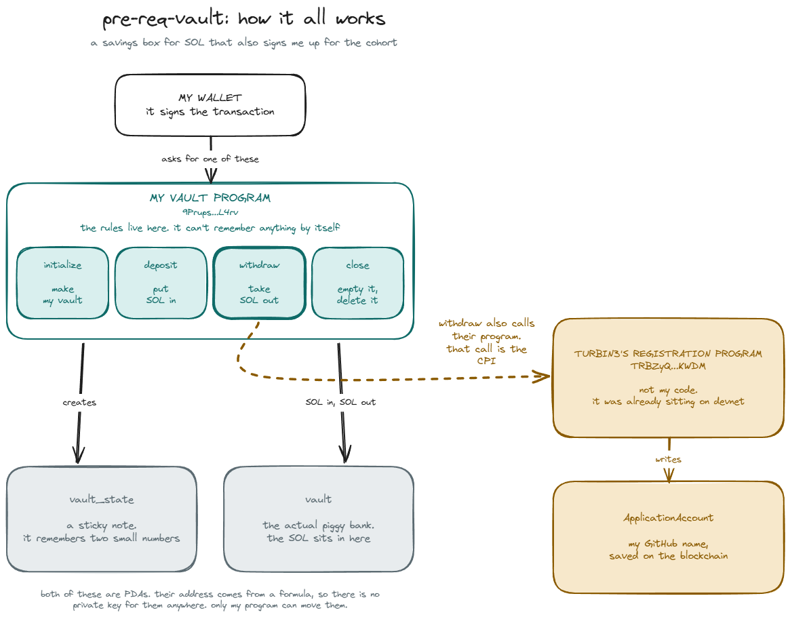

Turbin3 prerequisite · Solana devnet
A SOL vault in four instructions, and the cross-program invocation hidden inside the third one.

Invocation depth is what separates a real cross-program call from two instructions sitting side by side in one transaction. From the devnet logs:
Program 9PrupsAJcRLDZAS5wCKpJttKBREHFLkCBgauqMjWL4rv invoke [1]
Program log: Instruction: Withdraw
Program 11111111111111111111111111111111 invoke [2]
Program 11111111111111111111111111111111 success
Program TRBZyQHB3m68FGeVsqTK39Wm4xejadjVhP5MAZaKWDM invoke [2]
Program log: Instruction: Initialize
Program 11111111111111111111111111111111 invoke [3]
Program 11111111111111111111111111111111 success
Program TRBZyQHB3m68FGeVsqTK39Wm4xejadjVhP5MAZaKWDM success
Program 9PrupsAJcRLDZAS5wCKpJttKBREHFLkCBgauqMjWL4rv success
| vault program | 9PrupsAJcRLDZAS5wCKpJttKBREHFLkCBgauqMjWL4rv |
| registration program | TRBZyQHB3m68FGeVsqTK39Wm4xejadjVhP5MAZaKWDM |
| ApplicationAccount | 3HzjHaxztQ2qPztzBJXrHhdKB25usg13qZFnRk5yRm4T |
| github recorded | nisargpatel7042lva |
| withdraw tx | 39y4FNeu…FoCJ85B |
| source | github.com/nisargpatel7042lva/turbin3-prereq-vault |